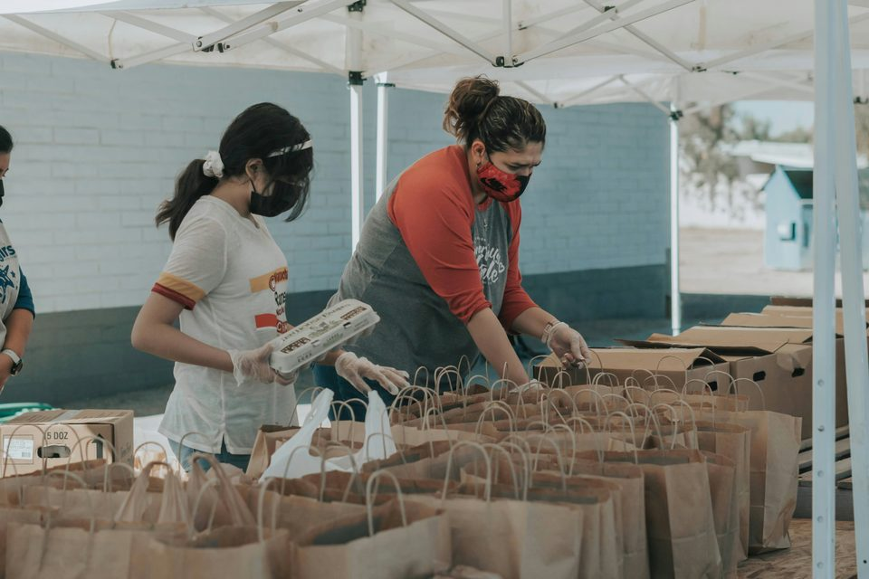

Ways we could help
Small actions.
Real-world care.
Explore the proposed programmes and find the kind of support or involvement that feels right for you.

Explore the focus areas
Find your starting point.
Use the filters to explore the proposed programme types. These are concepts for this student project, not currently operating services.
Showing all programmes.
01
Essentials · Food security
Community food drives
Food drives would bring together non-perishable groceries and everyday essentials for households experiencing difficult circumstances.
Ways to contribute
- Ask which non-perishable items are most useful.
- Help sort, pack or distribute supplies.
- Coordinate a collection with a school, church or community group.
Ask about food drives →
02
Essentials · Clothing
Clothing support
A clothing collection would help redirect clean, wearable clothing to people who could use it, while encouraging thoughtful reuse.
Ways to contribute
- Set aside clean clothing in good condition.
- Help sort donations by type and size.
- Support a safe, organised collection day.
Ask about clothing support →A closer look
Moments of community.
Select an image to view a larger version. Images are illustrative assets supplied with the student project.
Have an idea?
Every helpful action has a beginning.
Send a demonstration enquiry to explore volunteering, donations or a community partnership.